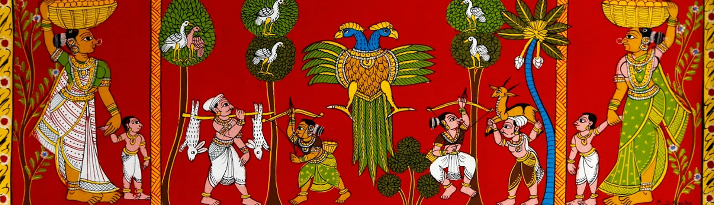

Cheriyal
Scroll
Paintings
India's rich heritage has been fascinating the people around the globe since ages. Ancient painting styles of India are celebrated worldwide.
Origin
The exact origins of scroll painting are unknown. But it is found in many states including Rajasthan. Orissa, Karnataka and Telangana. The similarities in Rajasthan and Cheriyal scroll painting in style and color has led a lot of researchers to believe that the painters of Rajasthan brought their artistic tradition down south.
Another historic belief about the origin of Cheriyal scroll painting is that storytelling itself gave rise to the scroll painting tradition in the Telangana region. This led to the commissioning of scrolls. It is also believed that the Nizam of Hyderabad invited the painters to decorate the inside of his palace.
Present Scenario
Cheriyal paintings have gone through many changes. Around 50 years ago, scroll painting gave employment to a large number of people in the Cheriyal village. They were painted for Storytellers, who would travel around the country and tell stories. For that, they would display these paintings as a visual representation. When people began to lose interest in ballads and folklores as television and movies became more popular. These artists adapt to the situation and they trimmed down the size for paintings to be used as home decor.
The scroll paintings that depicted long mythological stories now show a single frame from the story. A character or an event. The size of paintings has been trimmed down as now they are mostly used as home décor. They now go up to 60 to 90 cm in length. The paintings range in price from Rs 250 to Rs 1 lakh, depending on their size. The style of the craft has changed over time. In recent times, the decorations, colors, and personalities in paintings have altered. These can be subjective depending on the needs of the client.
Synthetic watercolors have mostly replaced natural watercolors used by artisans in recent years.
About the Paintings

Tradition
A traditional Cheriyal painter always begins by painting Lord Ganesh, as it is considered auspicious in Hindu tradition to begin any new work with Lord Ganesh, followed by Lord Brahma, Vishnu, and Maheshwara, as they are symbolized as the creators of the world in Hindu mythology, which is an introduction to the formation of the world, living beings, and castes/communities that are described according to the Hindu caste system.
Styling
The stylization is given a lot of importance to remind the audience that the visuals are only to aid the storytelling. The flowing lines and the visual impact of the characters against the background allows it to be attractive enough to grab the attention of the audience. The use of thin and thick lines are used for the accordance of the characters. the thin lines are used for the design of the jewellery. It gives an insight into people's love for ornamentation and also gives a clue as to when the story was set in place.
Colours
Colours have a crucial role in Cheriyal painting in terms of the whole story's attractiveness and feel. The background is frequently painted in a bright red colour to showcase anything that is painted on it. These paints are made with natural stone colours known as "Gaddalu ranga" in the area. Only a few hues, such as white, black, yellow, and green, are available. Characters in these paintings are immediately identifiable thanks to the colour schemes employed to depict the story's characters. Krishna, for example, has a blue face. Light colours were used for Gods, Kings and people of high caste, while dark colours were used for people of lower caste, devils and evildoers. This gives each painting its own personality and helps to distinguish them from one another.
Composition
The narrative stories are formed in sections and panels. Each panel is outlined with floral motifs and bright colours known as ‘’pitta kallu’’. The dimension of the panel is relative to the importance of the scenes. Most communities carry vertical scroll paintings. Some communities like Dakkallolus carry horizontally. Lines are free-flowing and easy and are called ‘Banthi’. According to the importance of the characters, placement in the frame is done. Spectacular characters are placed in the foreground. Modest characters occupy the background. Major characters are the largest in the scene and insignificant characters are relatively minuscule. The eyes of the characters do not show perspective. Cheriyal paintings don’t have any depth or perspective. The concentration is on symbolically representing an event.
Characteristics
Distinct in the wealth of ornate characters with high foreheads, startling eyes depicted in assorted and brilliant colours, they mainly constitute characters from myths as the scroll paintings are empathetic in their strong religious overtones. The scenes in the scrolls are detailed with descriptive elements like animals and vehicles. Cheriyal paintings include figures that are flat and face one another. These characters are described in a profile perspective, giving the impression that they are having a conversation. These characters' viewpoints and proportions are given the least prominence, yet their expression has a local flavour to it, and they symbolize the qualities of the area.
Costumes
The representation of the garments shows the creation of new fabrics as well as the influence of many civilizations on the Telangana region.Because each scroll survived for up to a hundred years, they mirrored the current situation and recorded the evolution of clothes. It is unavoidable that the outfits of the figures alter before they are replicated again by another artist. Ties and dyes, as well as prints, are described on scrolls. As a result, Cheriyal's scroll paintings include a pictorial record of several costume periods.
Artisan

D.Venkataramana
In the urge of saving the heritage and the art. Years ago, As a child, he learned the Cheriyal craft from his father along with his studies, as time flies his hobby became his education then his education became his passion and now his passion became his job. Here we have, Mr D Venkat Ramana. He completed his BFA in Painting from Sri Venkateshwara College of Fine Arts at Madhapur to follow his Ancestral craft. The happiest part of him is that his whole family contributes their part to the craft, his wife follows the art more immensely as compared to him. His passion leads him to the roads of appreciation and respect. He was also awarded national and several state-level awards. His ancestors have been practising this art for decades, now he is trying to forward it from all his soul and heart, stated Mr Venkat. He is also teaching but not forcing his children to forward their legacy. As it is his talent the craft Is his pride.
Contact Us
D. Venkata Ramana (Nakash)
BFA in Painting
State Award Winner and National Railway Award Winner
+91 98499 61926
D. Deepika (Nakash)
+91 95502 64217
Email: dvramana.cheriyalpainting@gmail.com